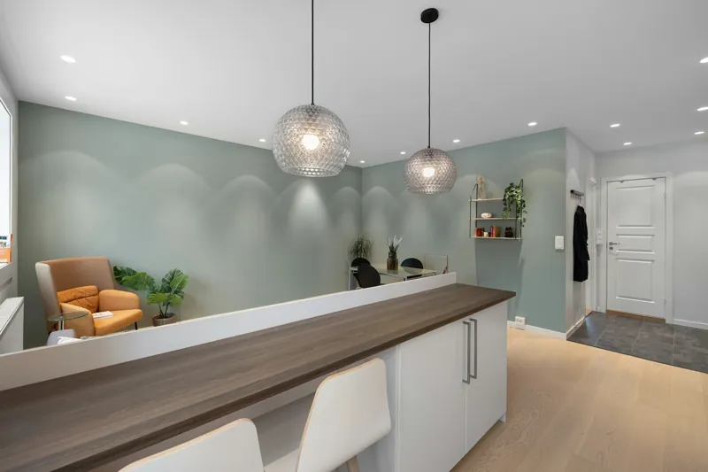
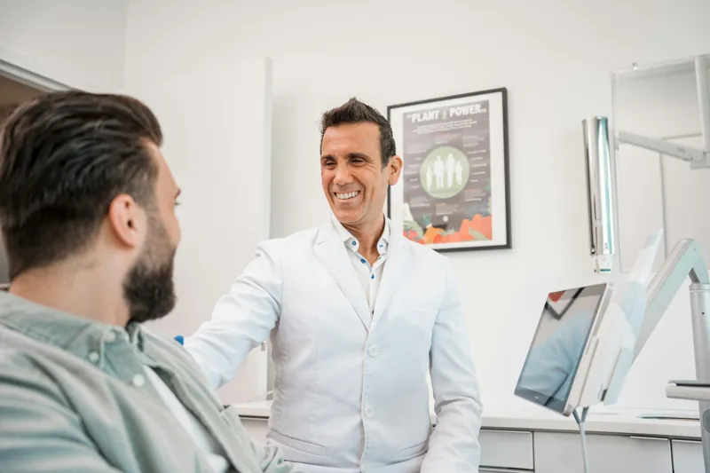
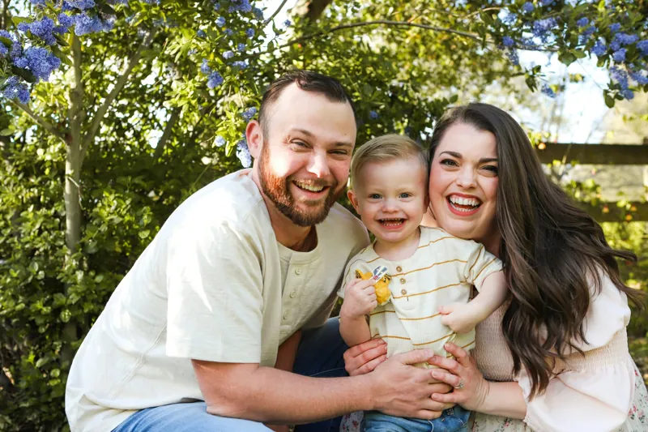

Cuidar do sorriso sem medo, no seu tempo.
Atendimento humano e atento para a família toda — de quem vem pela primeira vez a quem precisa de socorro rápido nas férias.
- Seg a sex, 9h às 17h
- Centro de Boiçucanga
- 5,0 no Googlemais de 70 avaliações
- Família todadas crianças aos avós
- Urgênciapara moradores e turistas
- Ortodontiacom acompanhamento próximo
Do check-up ao aparelho, tudo explicado antes.
Cada tratamento começa com uma avaliação e uma conversa franca sobre as opções para o seu caso.
Clínica geral
Consultas de rotina, diagnóstico e um plano de tratamento explicado passo a passo.
Ortodontia
Aparelhos para crianças, adolescentes e adultos, com consultas de acompanhamento e prazos combinados desde o início.
Urgência
Dor de dente, dente quebrado, inchaço ou restauração que caiu. Inclusive para quem está de passagem.
Preciso de atendimentoLimpeza e prevenção
Limpeza profissional, orientação de escovação e check-ups para manter a saúde da boca em dia.
Restaurações
Tratamento de cáries e reparo de dentes desgastados ou fraturados, com materiais da cor do dente.
Estética do sorriso
Avaliação das opções estéticas com indicação clínica e conversa honesta sobre o que faz sentido para você.
Valores e indicação de cada tratamento são definidos em consulta, após avaliação clínica.
Está de férias no litoral e precisa de dentista?
Dor de dente não escolhe hora — nem viagem. Fale com a gente pelo WhatsApp e a recepção encaixa seu atendimento o mais rápido possível.
- Dor de dente, inchaço ou sensibilidade forte
- Dente quebrado, restauração ou coroa que caiu
- Aparelho ortodôntico machucando ou solto
- Atendemos turistas e pacientes estrangeiros
Atendimento de urgência de segunda a sexta, das 9h às 17h. Em caso de trauma grave no rosto, sangramento que não para ou dificuldade para respirar ou engolir, procure imediatamente o pronto-socorro mais próximo.
Gente que conhece você pelo nome.
Uma equipe pequena e próxima, do primeiro “bom dia” na recepção até o fim do tratamento.
Débora e Janaína, na recepção, cuidam do seu agendamento, tiram dúvidas e encaixam as urgências do dia.


Tudo bem sentir medo. A gente vai com calma.
Muita gente adia a consulta por ansiedade ou por uma experiência ruim no passado. Aqui, o atendimento é pensado para você se sentir no controle.
- Primeiro, uma conversaAntes de qualquer procedimento, você conta suas preocupações e a gente escuta.
- Cada etapa explicadaVocê sabe o que vai acontecer antes de acontecer — sem surpresas.
- Um sinal para pausarCombinamos um gesto: levantou a mão, a gente para na hora.
- No seu ritmoSe precisar, dividimos o tratamento em consultas mais curtas.
Agende pelo WhatsApp em um minuto.
Escolha o tratamento, o dia e o período. A mensagem vai pronta para a recepção confirmar o horário.
- Segunda a sexta, das 9h às 17hNão atendemos aos sábados e domingos.
- Família todaPode agendar para você, seus filhos ou seus pais.
- É urgente?Use o atendimento de urgência — a recepção prioriza.

O que mais ouvimos dos pacientes.
“Eu tinha pavor de dentista e fui atendida com uma paciência enorme. Explicaram cada etapa antes de começar.”
“Quebrei um dente nas férias em Boiçucanga e fui atendido rapidinho. Equipe muito atenciosa com quem é de fora.”
“Levo a família toda. Atenção aos detalhes do começo ao fim, e a recepção é um carinho à parte.”
No centro de Boiçucanga.
Rua Manoel Francisco Ferro, 21 — Sala 14, Boiçucanga, São Sebastião – SP
- Segunda a sexta
- 9h às 17h
- Sábado e domingo
- Fechado
Perguntas que todo mundo faz.
Ficou alguma dúvida? A recepção responde pelo WhatsApp.
Vocês atendem urgência no mesmo dia?
A recepção prioriza os casos de urgência e procura encaixar o atendimento o quanto antes, de segunda a sexta, das 9h às 17h. Chame pelo WhatsApp e conte o que está sentindo.
Estou de férias na região. Posso ser atendido?
Sim. Atendemos turistas e pacientes estrangeiros. Boiçucanga fica perto de Maresias, Camburi e Barra do Sahy.
Tenho muito medo de dentista. Como funciona?
Começamos com uma conversa, explicamos cada etapa antes de fazer e combinamos um sinal para pausar quando você quiser. Se for melhor, o tratamento é dividido em consultas mais curtas.
Vocês atendem crianças?
Sim, atendemos a família toda. É só informar a idade da criança ao agendar.
Quanto custa a consulta?
Os valores dependem da avaliação de cada caso e são informados pela recepção. Não divulgamos preços pelo site.
Vocês aceitam convênio?
Consulte a recepção pelo WhatsApp sobre convênios e formas de pagamento aceitos.